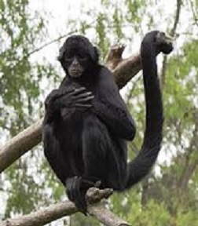
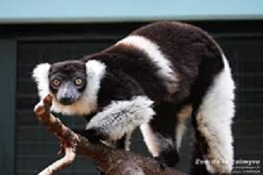

Monkeys And Apes
|
Monkeys and apes are actually our closest relatives in the animal kingdom - we're all primates!
Monkeys and apes are often confused - but there's a simple way to tell them apart. Usually monkeys are smaller than apes and have tails. That's not an exact rule though - some monkeys don't have a tail. And some apes, like gibbons, can be smaller than monkeys! You can see why it's confusing.
Monkeys are more likely to be arboreal (living in trees) than apes. They're remarkably agile and use their tails as a fifth limb. They can't swing between branches using their arms however, something apes do expertly.
Sumatran Orangutan
Orangutans are the only non-African 'Great Ape'. They once lived all over Asia but now only exist on Sumatra and Borneo.
Sumatran orangutans differ from their Bornean relatives in a number of ways. Sumatran orangutans are a lighter orange – cinnamon colour and are more slender in build. In male Sumatran orangutans, they have flatter check flanges (cheek pads).
You'll be amazed at how graceful and agile our Sumatran orangutans move. In the wild they sway from tree limb to tree limb (the technical term is an orthograde clamber) and the research we've done on this behaviour helped us design their habitat in a way that helps stimulate their natural behaviours with fixed trees and hanging webbing.
Sulawesi Macaque

The macaque is one of the most affectionate monkeys on the planet; individuals maintain relationships by grooming one another, they communicate with grunts and if you spot them smacking their lips this is a greeting sign.
Visit the Tangkoko Reserve in Islands and you can observe the body language and many different behaviours of the macaque. They have obvious individual personalities which can be seen in facial expressions.
Chimpanzees
Chimpanzee's have got strict social rules and their very loud high pitched calls and shouts show the sophisticated ways that they communicate with one another.
Their enclosure is specially designed to give them the most natural setting as possible. They spend the majority of their time in their large outdoor enclosure with access to trees and high sway poles. Indoors their specially designed enclosures ensure we can communicate with the chimpanzees safely and provide sheltered environments for sleeping and playing.
Slivery Gibbons
Spending most of their lives in the tree tops, silvery gibbon are fantastic climbers and travel in small family groups that consist of a mating pair and their offspring in various stages of development.
Bornean Orangutan

We're home to the oldest orangutan in the UK, Martha, who has been with us since 1965. She has two daughters, Sarikei and Leia, who also have offspring, like Iznee, fathered by our adult male Tuan. He came to Chester in 2007. We also have a second male, a young adult called Willie.
Spider Monkey

From a distance, especially if you see them moving along in silhouette, they look like big white spiders weaving their way through the forests.
They grab onto tree branches with long gangly limbs. They don't only using their arms and legs but also hang on by their tails. The underside of the tail is hairless so can be used like a fifth limb to help them swing through treetops.
They make loud whooping calls to communicate and to warn each other of danger.
A benefit of their exceptional climbing skills is that they don't have many natural predators because, hanging out so high up in the trees, they are pretty difficult to catch.
Despite that some species of spider monkey are now listed as Endangered in their natural South American homelands where they have been targeted by hunters for meat or for sport.
Ring-Tailed-Lemurs
Just look at their long bushy tails if you want to identify them, you'll see each lemur's tail is patterned with alternate white and white rings all the way along.
The rest of their bodies are greyish brown with luminous orange and yellow eyes, and white markings on their faces and at the fringed tips of their ears.
Aye-Ayes
They were initially classified as rodents due to their unusual appearance. They have thick coat ranging from slate grey to brown, with faces paler than the rest of the body.
Aye-ayes have stunning yellowish-orange eyes and distinctive hands which have curved claw-like nails on elongated, thin fingers.
They are solitary animals. Nests are individually scent marked and occupied by different individuals.
Howler Monkey
Howler monkeys are considered one of the loudest land animals, with their vocalizations heard up to a few miles away, even in dense forest.
They have enlarged basihyal or hyoid bone which helps them make their loud vocalization like, howls, barks and grunts. (which have been said to sound like wind blowing through a tunnel)
In the wild they tend to make the most noise at dusk or early in the morning, howling in groups.
They are one of the largest primates in Central and South America, with a strong, stocky build and long tails which can grow almost to the same length as their bodies.
Their tails can cling on to tree branches and are used to help them climb around rainforests, though they also often walk on all fours.
Mandrills
The mandrill is well known for it's brightly coloured faces and bums! Male mandrills have a more strikingly colourful face than females, which becomes more vibrant when they are excited. The brighter the male's face and rump are, the more appealing they are to females, and the more dominant they are within their group.
The structure of a group of mandrills is made up of a mixture of males and females with one dominant male. There is normally around 40 mandrills in a group, which often join other groups to form troops of up to 600 monkeys.
Pygmy Marmoset
Being the smallest (and lightest) monkey in the world gives the pygmy marmoset the benefit of being able to move quickly through the dense tropical forests it lives in. Their sharp claws and dexterous fingers are perfect for gripping on to branches and bark when climbing, and their prehensile tails make balancing a breeze!
Pygmy marmosets live in small groups of 2 to 15 individuals, led by the eldest, dominant female who is usually the only one to breed. The dominant female will normally give birth twice a year and generally will always have twins. Once the twins are born, the males will help to rear the young, often carrying them around.
White-Belted ruffed Lemur

Suitably named after their appearance, white-belted ruffed lemurs have a white band around their waist and white ruffs around their faces. They are also the third largest of lemur in the world.
These lemurs are crepuscular, which means they are normally only active in the early hours of the morning and the late evening. During this time, they are often found foraging for food which normally includes fruit, plants and nectar.
Copyright ©SomeHackers All Rights Reserved. 1996-2018
Web Site Design, Construction & Management By Some Hackers, Inc.